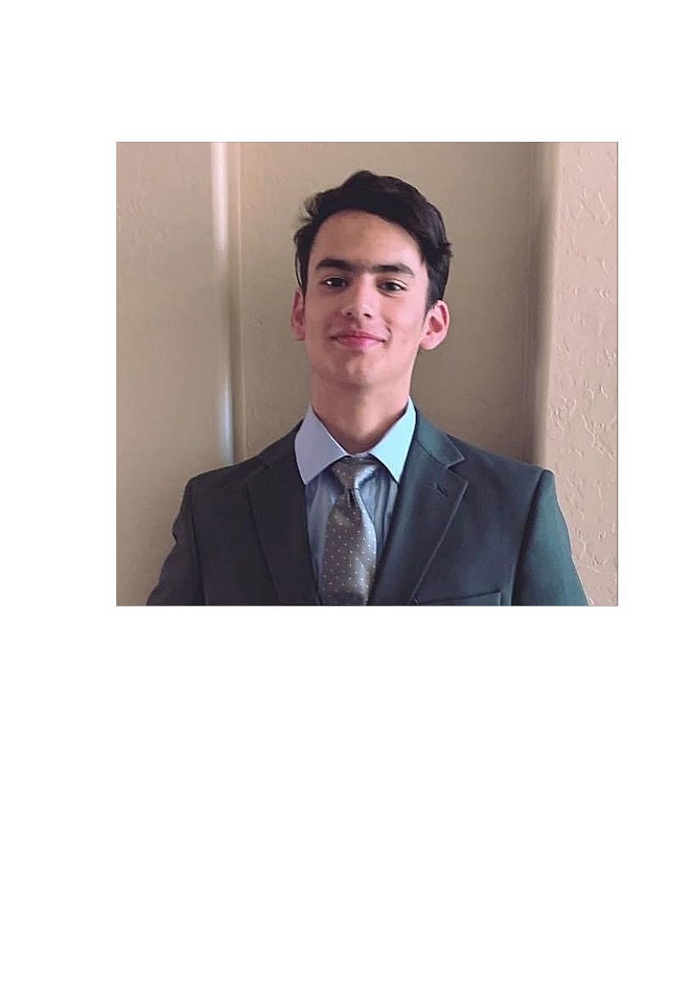

SciRealm Virtual Museum
About Page
Hi, I'm Nathan Harvey, and welcome to my virtual museum. I'm a 17-year-old student at Canyon View Highschool, and
my passion for technology and computer science stems from my love of taking things apart and rebuilding them. This
began when I was just seven years old and started playing with Legos, but it really took off when I was faced with
a broken camera, and my dad challenged me to fix it without breaking it further. From that day on, I became
fascinated with how technology works, leading me to pursue my passion for coding and web development. In fact,
this entire presentation is a result of what I've learned in my studies. I hope you enjoy exploring my virtual
museum.
